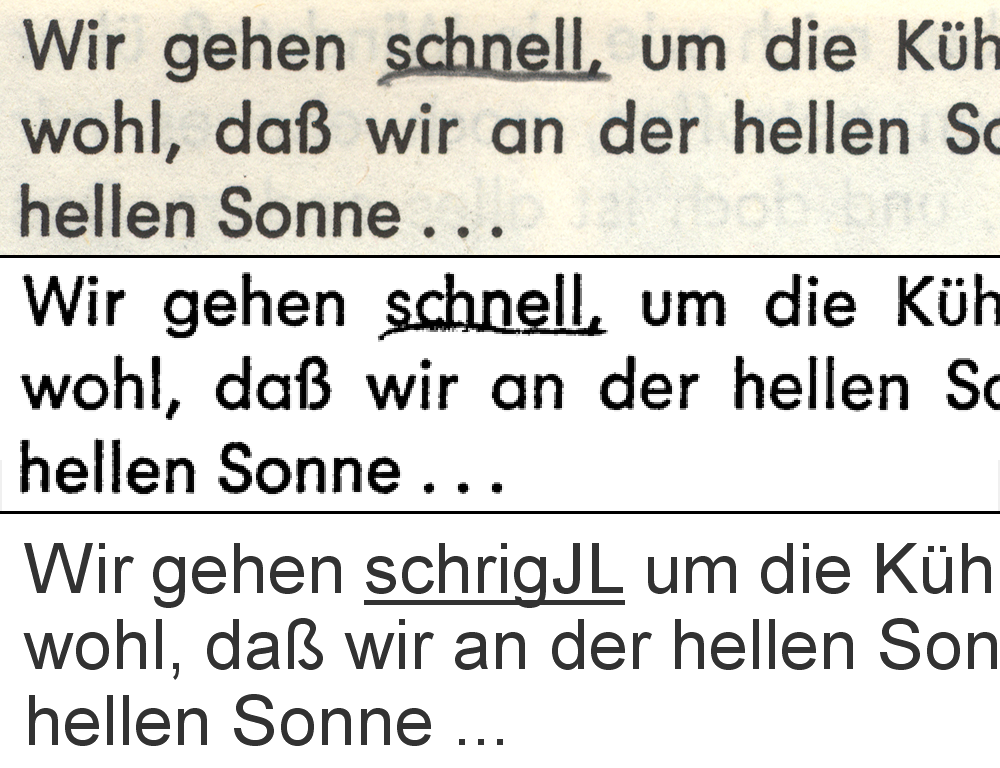
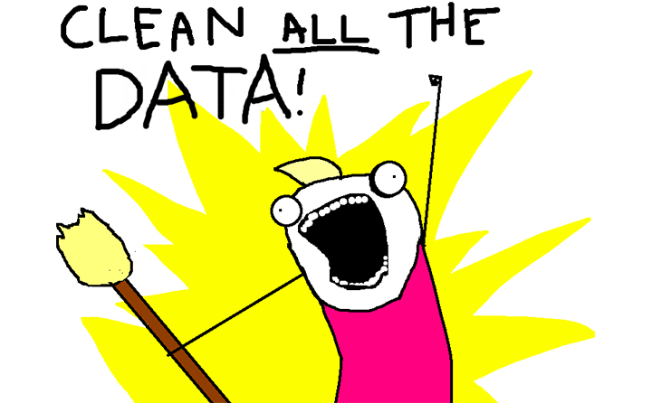

The ABC of Computational Text Analysis
#7 Working with (your own) Data
Recap last Lecture
- describe text as pattern using RegEx
- extract + replace textual parts
- literal:
abc - meta:
\w \s [^abc] * - power of
.*
- literal:
- Regex für Extraktion + Säubern
- man muss nur ungefähr wissen wonach suchen
- generalisierte Form = Muster
- Literale = Zeichen steht für tatsächliches Zeichen (buchstabentreu)
- Meta-Zeichen = Zeichen mit spezieller Bedeutung
- Fragen zu RegEx oder Übung?
Outline
- learn about available data resources
- use your own textual data
- any text :heavy_check_mark:
- “any” format :heavy_check_mark:
- from anywhere :heavy_check_mark:
- heute letzte Sitzung zu Kommandozeile
- zweiteilige Sitzung mit wenig Technischem
- existierende Daten, eigene Daten
- interessannte Datasets für die Sozialwissenschaften
- es gibt allerdings nicht viele
- zumeist eigene Daten präparieren
- eigene Textdaten nutzen unabhängig von
- Formaten
- historischem Kontext (digital native)
- Überlegen, was für eine Analyse in MiniProject
Data Sources
What Data Sources are there?
- broadly social
- newspapers + magazines
- websites + social media
- reports by NGOs/GOs
- scientific articles
- economic
- business plans/reports
- contracts
- patents
:point_right: basically, any textual documents…
- unheimliche Vielfalt an Dokumenten, alles neue digital
- Textkollektion ist bereits vorhanden im Gegensatz zu Survey
- given data statt created data
- Datenbereinigungen sind nötig
- hier nur einen Bruchteil vorgestellt, soll als Inspiration dienen
- Zeit reicht nicht, um auf alle Quellen einzugehen
Interesting Publishers
- Nexis Uni
- newspaper, business + legal reports (international)
- licensed by the university
- Constellate
- scientific articles of JSTOR across disciplines
- provides an easy dataset builder
- HathiTrust and Project Gutenberg
- massive collection of books (international)
- open, HathiTrust requires agreement
:point_right: check out other resources licensed by ZHB
- Ressourcen gelistet auf ZHBLuzern
- Zugang tlw. über ezproxy
- Nexis vielleicht spannendste Quelle für Analyse soziale Probleme
- Wieso Literatur? –> Zeitgeist
- genderspezifische Sprache, Verweise Natur/Umwelt
- Constellate
- kurze Demo von Constellate
- brandneue Platform
- einfache Zusammenstellung von JSTOR Artikeln
- sehr gute Metadaten
- auch gut für schnelle Recherchen ohne Download
Dataset Search
- Harvard Dataverse
- open scientific data repository
- Google Dataset Search
- Google for datasets basically
- corpora by the Department of Computational Linguistics @ UZH
:point_right: search for a topic followed by corpus, text collection or text as data
- moderne Wissenschaft veröffentlicht nicht nur Papers, sondern auch Daten
- computergestützte Textanalyse ist aber immer noch Nische
- Suchmaschinen für Datensätze
- allerlei Datensätze, primär aus Wissenschaft
- UZH hat Institut Computerlinguistik
- verschiedene Korpora
- Credit Suisse PDF Bulletin Corpus
Some great historical Corpora
ready off-the-shelf, machine-readable
- 1 August speeches by Swiss Federal Councilors
- provided via course repo
- Human Rights Reports by various NGOs
- United Nations General Debate Corpus
:sweat: There are still not many.
- sehr wenige standardisierte Datasets
- nicht wie bei Survey-Forschung, numerischer Daten aus Politik und Ökonomie
Online Computational Text Analysis
- Impresso
- many historical newspapers + magazines (CH, LU)
- free, requires account
- bookworm HathiTrust
- great filtering by metadata
- credible scientific source
- Google Ngram Viewer
- no filtering option
- useful for quick analysis
- Datenanalysen online durchführen
- Absicherung über andere Quellen
- Impresso: Complete re-digitization of the NZZ (together with the Zurich Central Library and Swiss National Library)
Search Techniques
Make your web search more efficient by using dedicated tags. Examples:
"computational social science"nature OR environmentsite:nytimes.com
- Quotes für Wörter die zusammen gehören
- Boolean Search
- OR / AND
Data is property :no_entry_sign:
… and has rights too
- copyright may further limit access to high quality data
- check the rights before processing the data

- Zugang zu Daten nicht immer einfach
- open data unterschiedlich unterstützt
- Datenbereitstellung oftmals Teil von Geschäftsmodell
- dann restriktiv
- oftmals ist Verwendung nicht geregelt
- nutzt Graubereich
Preparing your own Data
A world for humans …
… and a jungle of file formats.
- extrem viele File-Typen
- mühsam, aber es gibt einfache Tools für Umwandlung
Common Conversions
news, press releases, reports from organizations
:arrow_down:
digital native documents .pdf, .docx, .html
:arrow_down:
convert to .txt
:arrow_down:
scans of (old) documents .pdf, .jpg, .png
:arrow_down:
Optical Character Recognition (OCR)
machine-readable :white_check_mark:
- PDF ist Publikationsstandard
- neue (digital) vs. alte (scans)
- Kriterium: Suche möglich?
- anschliessend Schritte zur Umwandlung der wichtigsten Formate
- Keine Konzepte lernen, wie bei RegEx
- nur welches Tool, für welche Umwandlung
- mehr oder weniger copy-paste
- Pause (etwas früher)
Conversion of DOCX
use case: news articles from Nexis
pandocto convert many file formats- download as single articles in
.docxon Nexis
# convert docx to txt
pandoc infile.docx -o outfile.txt
### Install first with
brew install pandoc # macOS
sudo apt install pandoc # Ubuntu- pandoc ist ein fast-alles Könner für Dokumentkonversion
- kann auch html konvertieren: pandoc slides/KED2023_01.html -t plain
- zusätzliche Installation
- Nexis = News-Datenbank
- freier Zugang ezproxy
- kennen ezproxy alle?
Conversion of native PDF
use case: Swiss party programmes
pdftotextextracts text from non-scanned PDF
# convert native pdf to txt
pdftotext -nopgbrk -eol unix infile.pdf
### Install first with
brew install poppler # macOS
sudo apt install poppler-utils # Ubuntu- pdftotext: Name ist Programm
- Outputfilename kann nicht spezifiziert werden
- dieselben Parteiprogramme, die wir schon analysiert haben
- Layout kann Extraktion erschweren
- Spalten/Tabelle
- Häufigkeitsanalysen von Wörter sind robust, Struktur egal
Optical Character Recognition (OCR)
- OCR ~ convert images into text
- extract text from scans/images
tesseractperforms OCR- language-specific models
- supports handwriting + Fraktur texts
- image quality is crucial

tatsächlicher Buchstabe, nicht nur Bild davon
Zwischenschritt Verbesserung Kontrast, B/W
technisch Deep-Learning, nicht weiter von Bedeutung
früher teure Programme, heute sogar iPhone
- für viele Dokumente jedoch nicht geeignet
Conversion of digitalized PDF
use-case: historical party programmes
- extract image from PDF + improve contrast
- run optical character recognition (OCR) on the image
# convert scanned pdf to tiff, control quality with parameters
convert -density 300 -depth 8 -strip -background white -alpha off \
infile.pdf temp.tiff
# run OCR for German ("eng" for English, "fra" for French etc.)
tesseract -l deu temp.tiff file_out
### Install first with
brew install imagemagick # macOS
sudo apt-get install imagemagick # Ubuntu- Zwei Schritte: Bildumwandlung + OCR
- tesseract funktioniert für viele Bildformate
- nicht direkt für PDF
- Beispiel: Kassenbon fotografieren & mit Regex parsen
- Wirtschaftswissenschaften: indexierter Warenkorb
Configure ImageMagick properly
Windows Ubuntu users need to execute the following
# disable security policy for Windows
sudo sed -i '/<policy domain="coder" rights="none" pattern="PDF"/d' /etc/ImageMagick-6/policy.xml
# increase memory limits
sudo sed -i -E 's/name="memory" value=".+"/name="memory" value="8GiB"/g' /etc/ImageMagick-6/policy.xml
sudo sed -i -E 's/name="map" value=".+"/name="map" value="8GiB"/g' /etc/ImageMagick-6/policy.xml
sudo sed -i -E 's/name="area" value=".+"/name="area" value="8GiB"/g' /etc/ImageMagick-6/policy.xml
sudo sed -i -E 's/name="disk" value=".+"/name="disk" value="8GiB"/g' /etc/ImageMagick-6/policy.xml#LifeHack: Make a PDF searchable
use case: scanned book chapters
# output searchable pdf instead of txt
convert -density 300 -depth 8 -strip -background white -alpha off -compress group4 \
file_in.pdf temp.tiff
tesseract -l deu temp.tiff file_out pdf- Output als PDF statt Text
- für Suchen/Zitate rauskopieren
- convert hier mit Kompression, da PDFs zu gross werden ansonsten
Scraping PDF from Websites
use case: Swiss voting booklet
wgetto download any files from the internet
# get a single file
wget EXACT_URL
# get all linked pdf from a single webpage
wget --recursive --accept pdf -nH --cut-dirs=5 \
--ignore-case --wait 1 --level 1 --directory-prefix=data \
https://www.bk.admin.ch/bk/de/home/dokumentation/abstimmungsbuechlein.html
# --accept FORMAT_OF_YOUR_INTEREST
# --directory-prefix YOUR_OUTPUT_DIRECTORY- bis hierher: Wie Daten in txt Format bringen
- jetzt Download automatisieren
- Vorteil: schneller systematischer Download & Dokumentation von Quellen
- Haupt-URL angeben, wo PDF verlinkt sind
- Scraping von Blogs möglich über Python
- nicht Teil von Seminar
- nicht auf alle Argumente eingehen
Interesting Resources
- Party Programmes across Europe
- covers over 1000 parties from 1920 until today in over 50 countries
- Swiss voting booklets
- from 1978 until today
- 1 August speeches by Swiss Federal Councillors
- Nestlé Annual Reports
- … any organization of your interest :thumbsup:
Basics of Batch Processing
perform the same operation on many files
# loop over all txt files
for file in *.txt; do
# indent all commands in loop with a tab
# rename each file
# e.g. a.txt -> new_a.txt
mv $file new_$file
done- Batch Processing = gleiche Operation durchführen für alle Files
- Erklären von Loop/Schleife und Variable
- Wildcard zur Selektion > Liste von Files > Variable
- for-loop wichtiges Programmierkonzept
- Tabulator fürs Einrücken
Perform OCR for many PDF
for FILEPATH in *.pdf; do
# convert pdf to image
convert -density 300 $FILEPATH -depth 8 -strip \
-background white -alpha off temp.tiff
# define output name (remove .pdf from input)
OUTFILE=${FILEPATH%.pdf}
# perform OCR on the tiff image
tesseract -l deu temp.tiff $OUTFILE
# remove the intermediate tiff image
rm temp.tiff
done- sehr ähnlich wie vorher, nur für jedes einzelne File jetzt
Preprocessing → RegEx

- Aufbereitung unterschiedlich aufwendig
- für schnelle Analyse nicht notwendig
- nun alles da für Mini-Project, ausser wenn Lösung in Python
Questions?
In-class: Exercises I
- Make sure that your local copy of the Github repository KED2023 is up-to-date with
git pull. Check out the data samples inmaterials/dataand the scripts to extract their text inmaterials/code. - Install the missing tools with the commands given on the respective slides:
pandoc, imagemagick, poppler. - Apply the commands to reproduce on the given data. Test them on your own data. Check the resources. Ask questions. Think about your mini-project.
In-class: Exercises II
- Use
wgetto download cogito and its predecessor uniluAKTUELL issues (PDF files) from the UniLu website. Start with downloading one issue first and then try to automatize the process to download all the listed issued using arguments for thewgetcommand. - Convert the cogito and uniluAKTUELL PDF files into TXT files using
tesseract. Try with a single issue first and then write a loop to batch process all of them. - What is the University of Lucerne talking about in its issues? Use the commands of the previous lectures to count the vocabulary.
- Do the same as in 3.), yet analyze the vocabulary of cogito and uniluAKTUELL issues separately. Does the language and topics differ between the two magazines?
In-class: Exercises III
- Use
wgetto download a book from Project Gutenberg and count some things (e.g., good/bad, joy/sad). wgetis a powerful tool. Have a look at its arguments and search for more examples in tutorials on the web.
Resources
Make a more sophisticated script for PDF-to-TXT conversion
- Erick Peirson. 2015. Tutorial: Text Extraction and OCR with Tesseract and ImageMagick - Methods in Digital and Computational Humanities - DigInG Confluence. online